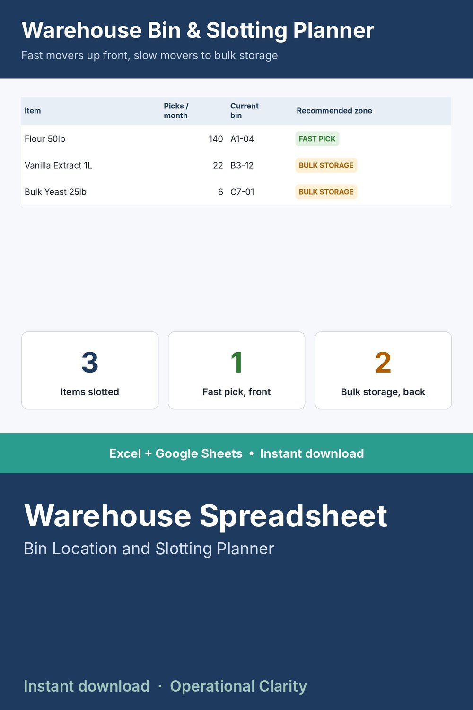

Warehouse Spreadsheet

STOP WALKING TO THE BACK OF THE WAREHOUSE FOR YOUR BEST SELLERS.
Your highest-velocity items should be the closest to the pack station - not buried in whatever bin happened to be open. This sheet tells you exactly which zone each item belongs in, based on how often it's actually picked.
WHAT IT DOES
- Log how many times each item is picked per month
- Automatically recommends Fast Pick (front), Medium (mid-aisle), or Bulk Storage (back) based on your own thresholds
- Dashboard shows how many items are in each zone at a glance
WHAT'S INCLUDED
- Excel file (.xlsx) - works in Excel 2010 and newer, no macros, no add-ins needed
- Start Here tab with plain-English setup instructions
- Sample data included so you can see it working before you enter your own numbers
WHO THIS IS FOR
Warehouse and small business owners who are tired of watching staff walk past slow movers to reach a fast-selling item stuck in the back.
INSTANT DOWNLOAD - no physical item will be shipped. Because this is a digital product, all sales are final.